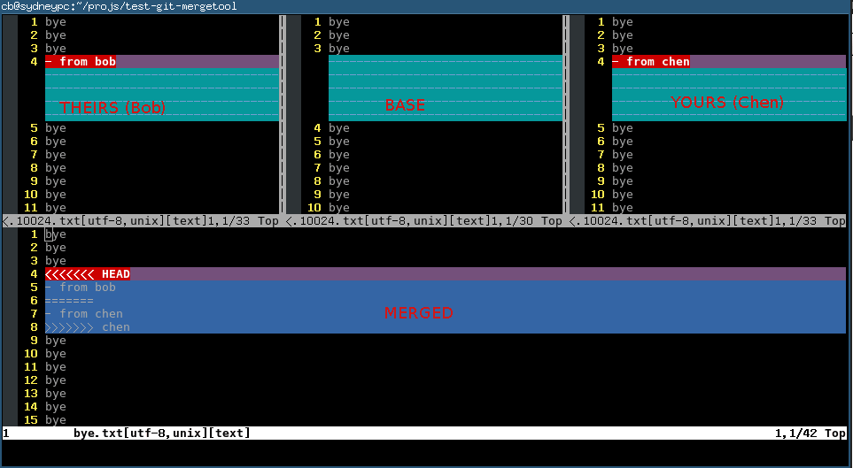

My git set up
Content of my .gitconfig,
[apply]
whitespace = nowarn
[user]
name = my name
email =my@email.com
[core]
; @see http://comments.gmane.org/gmane.comp.version-control.git/166098
filemode = true
;autocrlf = false
ignorecase = false
;autocrlf=false
;safecrlf=true
[color]
diff = auto
status = auto
branch = auto
ui = auto
[alias]
ca=commit --amend
cl = clean -fxd
au = add -u
st = status -sb #short status output for geeks
stu= status --untracked-files=no
r = rebase
c = commit
co = checkout
b = branch
s=show
l = log --pretty=format:'%C(yellow)%h%Creset %ad %s %Cred(%an)%Creset' --date=short --decorate --graph
d =diff
da= diff --name-only # get the file list
ds = diff --stat
dw=diff --word-diff #highlight word changes
dc = diff --cached
dcs = diff --cached --stat
t=stash
a=add
f=format-patch -n --stdout
rh=reset --hard
rs=reset --soft
undo=reset --soft HEAD^
rs=reset
cnt=count-objects
ps=push
p=pull --rebase
w = whatchanged
sb = show-branch
cp = cherry-pick
# @see http://magazine.redhat.com/2008/05/02/shipping-quality-code-with-git/
cpnx = cherry-pick --no-commit -x
rl = reflog
lp = log -p
lt = log --topo-order
gl = log --graph
m = merge
mt= mergetool
me = merge --no-commit --no-ff
brm = branch --merged
brnm = branch --no-merged
rnc = revert --no-commit
com = checkout master
glt = log --pretty=format:'%h : %s' --topo-order --graph
phm = push heroku master
pom = push origin master
puom= pull origin master
untrac=rm -r --cached
#produce patch for hg
hgp = show --format="From: %an <%ae>%n%s%n%b" -U8
show-root-folder = rev-parse --show-toplevel
forward = pull --ff -r
u = !git stash && git pull --rebase && git stash pop
[sendemail]
smtpencryption = tls
smtpserver = smtp.gmail.com
smtpuser = myname@gmail.com
smtpserverport = 587
[github]
user = github user
[push]
default = tracking
[merge]
branchdesc = true
log = true
tool = vimdiff
[diff]
tool = vimdiff
[mergetool]
prompt = false
Content of my .bashrc,
# enable bash completion in interactive shells
# @see http://www.simplicidade.org/notes/archives/2008/02/bash_completion.html
if [ -f /etc/bash_completion ]; then
# ArchLinux
. /etc/bash_completion
elif [ -f /etc/profile.d/bash-completion.sh ]; then
# Gentoo Linux
. /etc/profile.d/bash-completion.sh
fi
. $HOME/bash_completion.d/gibo-completion.bash
. $HOME/bash_completion.d/git-completion.bash
function parse_git_branch ()
{
git branch --no-color 2> /dev/null | sed -e '/^[^*]/d' -e 's/* \(.*\)/\1/'
}
function simpleprompt()
{
if test -n "`type -t git`"; then
PS1="\$(parse_git_branch) \\$ "
else
PS1="\\$ "
fi
}
alias gcd='cd $(git rev-parse --show-cdup)'
alias g="git status --short -b"
alias gn="git status --untracked-files=no --short -b"
alias gfl="git diff-tree --no-commit-id --name-only -r"
alias ga="git add"
alias gaa="git add ."
alias gau="git add -u"
alias gc="git commit -m"
alias gca="git commit --amend"
alias gb="git branch"
alias gbd="git branch -d"
alias gco="git checkout"
alias gcob="git checkout -b"
alias gt="git stash"
alias gta="git stash apply"
alias gm="git merge"
alias gmt="git mergetool"
alias gr="git rebase"
alias gl="git log --oneline --decorate --graph"
alias gs="git show"
alias gss="git show --stat"
alias gd="git diff"
alias gds="git diff --stat"
alias gdc="git diff --cached"
alias gdcs="git diff --cached --stat"
alias gbl="git blame"
alias gps="git push"
alias gpl="git pull"
alias cdgr='cd $(git rev-parse --show-toplevel)' #goto root dir
function gu(){
local st=`git status --porcelain --untracked=no`
if [ -z "$st" ]; then
git pull --rebase
else
git stash && git pull --rebase && git stash pop
fi
}
function gsrp(){
if [ -z "$1" ]; then
echo "Usage: gsrp old_string new_string (string could be perl regex)"
echo "replace the content of file in latest git commit"
elif [ $# -eq "2" ]; then
git diff-tree --no-commit-id --name-only -r HEAD|xargs perl -pi -e "s/$1/$2/g"
elif [ $# -eq "3" ]; then
git diff-tree --no-commit-id --name-only -r $1|xargs perl -pi -e "s/$2/$3/g"
fi
}
[ $(uname -s | grep -c CYGWIN) -eq 1 ] && OS_NAME="CYGWIN" || OS_NAME=`uname -s`
# xclip has some problem with my emacs, so I use xsel for everything
function pclip() {
if [ $OS_NAME == CYGWIN ]; then
putclip $@;
elif [ $OS_NAME == Darwin ]; then
pbcopy $@;
else
if [ -x /usr/bin/xsel ]; then
xsel -ib $@;
else
if [ -x /usr/bin/xclip ]; then
xclip -selection c $@;
else
echo "Neither xsel or xclip is installed!"
fi
fi
fi
}
# search the file in root directory of git repository, pop up dialog let you choose the path,
# then put the full path in clipboard
function gg()
{
local cli=`find $(git rev-parse --show-toplevel) -type f -iname '*'$*'*'|percol`
echo -n ${cli}|pclip
echo ${cli}
}
alias ge='grep -rsn --exclude=TAGS --exclude=tags --exclude=GTAGS --exclude-dir=.svn --exclude-dir=.sass-cache --exclude-dir=.cache --exclude-dir=.cvs --exclude-dir=.git --exclude-dir=.hg --exclude=\*.swp --exclude=\*~ --color=auto'
function ggs()
{
local cli=`ge -l $* $(git rev-parse --show-toplevel)/*|percol`
echo -n ${cli} |pclip;
echo ${cli}
}
I do lots of git stuff under shell, so I'm heavly dependent on below bash tools,
虱面鱼肚汤烧法
台湾很有名的小吃,烧法见型男大主厨.
要点:
- 先煎生姜是为了快速逼出姜的香味,同一个厨师在另一个节目中又建议姜丝最后放,因为姜放在水中煮就无味了.
- 如最后放生姜,姜丝要很细.
- 鱼肉一面,煎鱼皮沾锅.
- 放下鱼肉煮5分钟即可,否则鱼肉容易老.
- 豆腐当场切片下锅,这样容易入味
- 柴鱼粉是因为快速烧法,如果先熬鱼骨汤则不需要.
install google talk plugin (64bit) on gentoo Linux
firefox 'http://www.google.com/chat/video/thankyou.html' emerge -v deb2targz &&deb2targz google-talkplugin_current_amd64.deb &&
mkdir googletalk && cd googletalk
tar xvf ../google-talkplugin_current_i386.tar.gz &&
sudo cp -Rfv {etc,opt} /
sudo cp -Rfv usr/lib/* /usr/lib64/
Here is the content of google talk:
./etc/cron.daily:google-talkplugin
./opt/google:
chrome
talkplugin
./opt/google/chrome:
pepper
./opt/google/chrome/pepper:
libppo1d.so
./opt/google/talkplugin:
./usr/lib:
firefox
iceape
iceweasel
midbrowser
mozilla
xulrunner
xulrunner-addons
./usr/lib/firefox:
plugins
./usr/lib/firefox/plugins:
libnpgoogletalk.so
libnpgtpo3dautoplugin.so
libnpo1d.so
./usr/lib/iceape:
plugins
./usr/lib/iceape/plugins:
libnpgoogletalk.so
libnpgtpo3dautoplugin.so
libnpo1d.so
./usr/lib/iceweasel:
plugins
./usr/lib/iceweasel/plugins:
libnpgoogletalk.so
libnpgtpo3dautoplugin.so
libnpo1d.so
./usr/lib/midbrowser:
plugins
./usr/lib/midbrowser/plugins:
libnpgoogletalk.so
libnpgtpo3dautoplugin.so
libnpo1d.so
./usr/lib/mozilla:
plugins
./usr/lib/mozilla/plugins:
libnpgoogletalk.so
libnpgtpo3dautoplugin.so
libnpo1d.so
./usr/lib/xulrunner:
plugins
./usr/lib/xulrunner/plugins:
libnpgoogletalk.so
libnpgtpo3dautoplugin.so
libnpo1d.so
./usr/lib/xulrunner-addons:
plugins
./usr/lib/xulrunner-addons/plugins:
libnpgoogletalk.so
libnpgtpo3dautoplugin.so
libnpo1d.so
./usr/share:
doc
./usr/share/doc:
google-talkplugin
./usr/share/doc/google-talkplugin:
changelog.Debian.gz
set up nfs server on ArchLinux
The purpose of set up nfs server is to watch video stored on server through my android devices.
sudo pacman -S nfs-utils # donnot touch /etc/idmapd.confmkdir -p /srv/nfs4/z
add following lines into /etc/fstab:
UUID=986C96596C9631CC /mnt/z ntfs-3g defaults,nofail 0 2/mnt/z /srv/nfs4/z none bind,nofail 0 0
add this line into /etc/exports:
/srv/nfs4/z 192.168.0.0/24(async,rw,no_subtree_check,nohide,no_root_squash)
make sure change in /etc/exports to take effect:
sudo exportfs -ra
now enable and start the services:
sudo systemctl enable rpc-idmapdsudo systemctl start rpc-idmapd
sudo systemctl enable rpc-mountd
sudo systemctl start rpc-mountd
An example to abuse the git merge
WARNING, this is BAD practice. I'm showing you anti-pattern you'd better avoid.
The work flow is simple at the beginning. There is only one master branch where several developers submit the code.
Then come bad rules:
- Rule 1, any feature should be done on new branch (this rule is actually good if without next three rules)
- Rule 2,
git rebaseis forbidden and any minor branch created by developers should be publicized immediately. - Rule 3, keep using your same feature branch forever even it's behind master branch for a very long time.
- Rule 4,
git mergebetween feature and master branches frequently
After three months developement, this is the result of git log –graph –oneline: 
Can you see the "M" at the top right corner. It's "M" from "Merge".
Use vimdiff to resolve git/subversion/mercurial merge conflicts effectively
You can jump to 1.5 section at the end of this article.
I use git as an example of version control software. But you can use any other version control software instead.
The reasons to use vimdiff to do the merge?
- It's free (vim)
- It works on any OS
- It works in shell
- Keyboard only
Setup
Setup vimdiff (OPTIONAL)
The vimdiff as a merge tool will display several buffers to show YOURS/THEIRS/ORIGINAL code.
First, add following code into your ~/.vimrc,
set laststatus=2 "show the status line
set statusline=%-10.3n "buffer number
The purpose of above two lines is to display buffer number at the status line of vim. It's OPTIONAL. You don't need see the buffer number if you are familiar with the all the buffer's position. The left top is buffer number 2. The middle top is buffer number 3. The right top is buffer number 4.
Second, if you know the buffer number, you can use hot key like ",2" (press comma first, then press two key as quickly as possible) to pull change from buffer number 2. Add below code into your ~/.vimrc to set up hot keys:
map <silent> <leader>2 :diffget 2<CR>
map <silent> <leader>3 :diffget 3<CR>
map <silent> <leader>4 :diffget 4<CR>
Setup git
Run below commands in shell,
git config --global merge.tool vimdiff
git config --global mergetool.prompt false
Usage
Create a "hello world" project
I setup a "hello world" project at https://github.com/redguardtoo/test-git-mergetool for your practice.
It has three branches "master", "bob", and "chen",
git clone https://github.com/redguardtoo/test-git-mergetool.git
cd test-git-mergetool
git checkout -b bob origin/bob # create local mirror of bob branch
git checkout -b chen origin/chen # create local mirror of chen branch
Bob and Chen has edited same files. So please merge branch "bob" into "master" at first. Then merge from "chen". The merge conflicts will be created.
git branch # double check that we got three local branches: master, bob, chen
git checkout master # set master branch as main branch
git merge bob #this is ok, because bob is the first one to merge changes
git merge chen # now some conflicts created because Bob has already edited and merged same files
Resolve merge conflict
Now start merge tool,
git mergetool
Git will invoke vimdiff with the following window layout. There are four buffers in this layout: 
Here is the explanation of each buffer:
| Buffer | Explanation | Buffer Number |
|---|---|---|
| THEIRS (LOCAL) | contents of the file on the current branch | 2 |
| BASE | common base for the merge | 3 |
| YOURS (REMOTE) | contents of the file to be merged. | 4 |
| MERGED | The file containing the conflict markers. You need edit and commit this file. | 1 |
Some people name THEIRS and YOURS buffer to LOCAL and REMOTE buffer. That's fine because names are just names. The point is that the top middle buffer is the BASE one which contains the original code before Bob and Chen committing any code. And the bottom buffer is the mess which contains resolved/unresolved conflicts where you actual editing work happens.
You could press hot key =,2=, Then you pick the content from THEIRS buffer (the top left buffer). It means you will use the Bob's code and discard Chen's code in MERGED buffer.
You could press hot key ",3", Then you pick the content from BASE buffer (the top middle buffer). It means you will discard either Bob's code or Chen's code in MERGED buffer.
You could press hot key ",4", Then you pick the content from YOURS buffer (the top right buffer). It means you will use Chen's code and discard Bob code in MERGED buffer.
Or you can edit the content directly in MERGED buffer. Anyway, git only care about the file binding to MERGED buffer. Any other buffer will be ignored by git.
You can use hot key [c and ]c to navigate to previous/next conflict (including the conflict resolved by git automatically) in current file which is binding to MERGED buffer.
After finishing editing of the conflicting file in MERGED buffer, you can use hot key :xa to exit vimdiff. Git will open next conflicting file vimdiff automatically.
When you have resolved all the conflicts, follow the hint of git to commit your changes.
Tips
- fugitive.vim (https://github.com/tpope/vim-fugitive) can do this too. Actually it can do much more git stuff than merge. I cannot write this article without reading its code
- You can use Emacs to do the similar job (http://stackoverflow.com/questions/1817370/using-ediff-as-git-mergetool). For me, Emacs start up time is too much for this task. Some people use
emacsclientwhich has other overhead I don't like - If you prefer GUI, use command line `git mergetool -t gvimdiff` instead
- The
:diffgetcommand is valid if and only if there are MARKED conflicts in merged buffer. If there is NO marked string like ">>>>" or "<<<<<" around current change (you can jump to previous/next change by press[cor]c), it means the git have automatically resolved potential conflict for you. Reviewing is still wise because git is not as smart as human - If you prefer navigating between the unresolved conflicts only, you can install Tim Pope's vim-unimpaired and use hot key "[n" and "]n" to do the navigation
- I map
[nand]nto more handy hot keys:
map ]] ]n
map [[ [n
You can use command line like "git mergetool -t vimdiff" to start vimdiff from git.
So the minimum set up is adding three lines of code into your ~/.vimrc:
map <silent> <leader>2 :diffget 2<CR> :diffupdate<CR>
map <silent> <leader>3 :diffget 3<CR> :diffupdate<CR>
map <silent> <leader>4 :diffget 4<CR> :diffupdate<CR>
Then you can press hot key ",2" ",3" ",4" in vimdiff to pull change from top three buffer. The bottom buffer is for editing the code with markers which is actually your only work space.
":help vimdiff" for other hot keys.
#+image/git-merge-tool-nq8.png 
subversion/mercurial
Until now I'm focusing on how to tweak the vimdiff UI because the git has already setup the basic vimdiff layout for us. So we just follow the Git layout in other VCS.
subversion
Insert below code into ~/.subversion/config:
[helpers]
merge-tool-cmd = vimdiff.sh
Content of vimdiff.sh
#!/bin/sh
#
# Step 1:
# When you get following options during svn merge command, select option 'l'. This is to launch external tool to resolve conflicts.
#
# Conflict discovered in 'main.h'.
# Select: (p) postpone, (df) diff-full, (e) edit,
# (mc) mine-conflict, (tc) theirs-conflict,
# (s) show all options: l
# Step 2: Now vim will be opened in diff mode with 3 files - mine, theirs and merged. Make the required changes in the merged file, and do save and exit (:xa).
# Step 3:
# Now below options will appear again, select 'r' (to accept the merged version) now.
BASE=${1}
LOCAL=${2}
REMOTE=${3}
MERGED=${4}
WCPATH=${5}
# copied from from git's vimdiff script
# @see https://github.com/git/git/blob/master/mergetools/vimdiff
vimdiff -f -d -c 'wincmd J' "$MERGED" "$LOCAL" "$BASE" "$REMOTE"
mercurial
Insert below code into ~/.hgrc:
[ui]
merge = vimdiff
[merge-tools]
vimdiff.executable = vim
vimdiff.args = -f -d -c 'wincmd J' "$output" "$local" "$base" "$other" +close +close
open README under git root directory in Emacs
I often need update my README files at the root directory of my project which is always managed by git.
As a lazy guy, I' rather use some hotkey to open that README.
So if you add below elisp code into your ~/ .emacs, you can use hot key C-c C-f to open the README:
(defun open-readme-in-git-root-directory () (interactive) (let (filename (root-dir (locate-dominating-file (file-name-as-directory (file-name-directory buffer-file-name)) ".git")) ) ;; (message "root-dir=%s" root-dir) (and root-dir (file-name-as-directory root-dir)) (setq filename (concat root-dir "README.org")) (if (not (file-exists-p filename)) (setq filename (concat root-dir "README.md")) ) ;; (message "filename=%s" filename) (if (file-exists-p filename) (switch-to-buffer (find-file-noselect filename nil nil)) (message "NO README.org or README.md found!")) )) (global-set-key (kbd "C-c C-f") 'open-readme-in-git-root-directory)
,,,,
How to measure a Emacs geek
Me, for example.
The first day I changed my .emacs.d:
master $ git log --pretty=format:'%C(yellow)%h%Creset %ad %s %Cred(%an)%Creset' --date=short|grep "git config user.name"|tail -n1
11fd85f 2011-08-31 eim (Chinese input method) (chen bin)
How many times I modified my emacs.d since then:
master $ git log --pretty=format:'%C(yellow)%h%Creset %ad %s %Cred(%an)%Creset' --date=short|grep "git config user.name"|wc -l672
My emacs.d at github: https://github.com/redguardtoo/emacs.d
The reliable way to access system clipboard from Emacs
reliable way to access system clipboard from Emacs :emacs:en:linux:clipboard:
CREATED:
UPDATED:
The Emacs clipboard questions has been asked so many times. Yet few give a complete and reliable solution.
Only a dedicated project maintained by professional developer could solve this issue once for all.
simpleclip is such a project.
I only use its APIs `simpleclip-get-contents` and `simpleclip-set-contents`.
Here is my setup:
(require 'simpleclip)
(defun copy-to-x-clipboard ()
(interactive)
(let ((thing (if (region-active-p)
(buffer-substring-no-properties (region-beginning) (region-end))
(thing-at-point 'symbol))))
(simpleclip-set-contents thing)
(message "thing => clipboard!")))
(defun paste-from-x-clipboard()
"Paste string clipboard"
(interactive)
(insert (simpleclip-get-contents)))
;; Press `Alt-Y' to paste from clibpoard when in minibuffer
(defun my/paste-in-minibuffer ()
(local-set-key (kbd "M-y") 'paste-from-x-clipboard))
(add-hook 'minibuffer-setup-hook 'my/paste-in-minibuffer)
How to refactor/rename a variable name in a function efficiently
As we dicussed in Emacs community at Google+. Although multiple-cursor is good for this task, I cannot use it because it conflicts with my favourite evil-mode (Vim simulation in Emacs).
There is another emacs plugin called iedit which could do the similar job (I usually use its command called iedit-mode-toggle-on-function)
Though iedit is good, there is still room for improvement. When using iedit-mode-toggle-on-function, we need press key twice to rename the variable name. Once to enable it, twice to disable it.
Magnar Sveen pointed out in the G+ discussion that the key point we need plugins like multiple-cursor or iedit-mode is that we can see all the changes while doing the editing.
This reminds me that evil-mode has a excellent regex string replacing mode which also show the changes when you are typing EACH character of new string.
So by using evil-mode's default regex replacing command, I can implement similar feature even more efficiently then iedit-mode!
Here is my elisp code:
(defun evilcvn-change-symbol-in-defun () "mark the region in defun (definition of function) and use string replacing UI in evil-mode to replace the symbol under cursor" (interactive) (let ((old (thing-at-point 'symbol))) (mark-defun) (unless (evil-visual-state-p) (evil-visual-state)) (evil-ex (concat "'<,'>s/" (if (= 0 (length old)) "" "\<\(") old (if (= 0 (length old)) "" "\)\>/")))) ) (global-set-key (kbd "C-c ; s") 'evilcvn-change-symbol-in-defun)
Put you cursor above a symbol/variable and press hot key "Ctrl-c ; s", then the regex to replace that symbol is automatically created and inserted into mini-buffer. Now you only need type new string and watch.
This is the screen shot (I renamed variable "count" into "cnt" in C++ function hello):